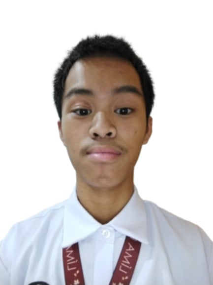

About Me
Hi! My name is Acel Gabriel B. Ferrer, 17 years old, eldest among four brothers. I am an ABM Grade 12 student at Arellano University, Nagpayong, Pasig City. My hobbies include music, gaming, and photography.
I chose ABM because I love finance and counting money! I aspire to become a Finance or Marketing Supervisor. Initially I considered HUMSS for public speaking, but ABM was the better choice.
If I were not in ABM, I would pursue photography. Capturing moments lets me preserve memories and express creativity while documenting the world around me.